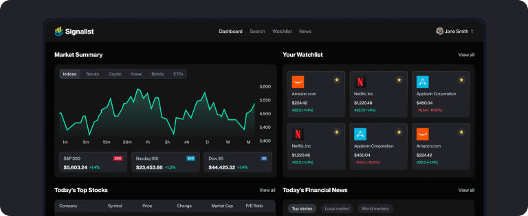
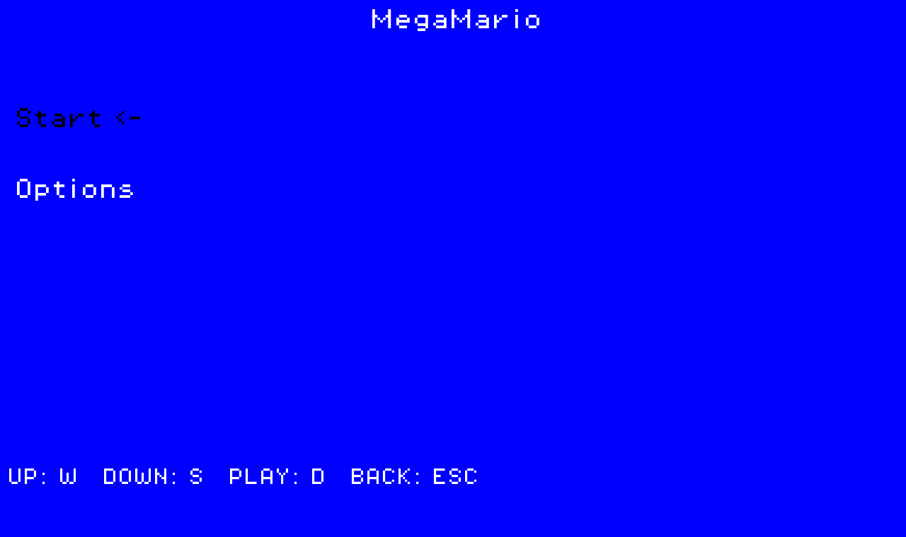

C++ / SFML01
Alien Survivors
A survivor-like game on an alien planet, built with a custom ECS game engine. Includes leveling, weapons, upgrades, and a full playable loop.
C++SFMLECS
Play / demo availableGitHub ↗
I build interfaces, data systems, games, and practical AI tools.
Titan Logix Corp. · Edmonton, AB
University of Alberta · Edmonton, AB
YOYA Network Technology · Xiamen, China
Independent · Vancouver, BC / Remote
A survivor-like game on an alien planet, built with a custom ECS game engine. Includes leveling, weapons, upgrades, and a full playable loop.

Market dashboard with trends, heat maps, top stories, and individual stock details.

Cyberpunk auto-runner built on a custom engine with ECS architecture, scenes, animations, and drag-and-drop objects.
Procedural terrain using Perlin noise, material-based tiles, and an isometric projection.
Scrapes show information and recommends titles based on ratings and genre.
A playable Chinese chess game implemented for an Arduino touchscreen interface.